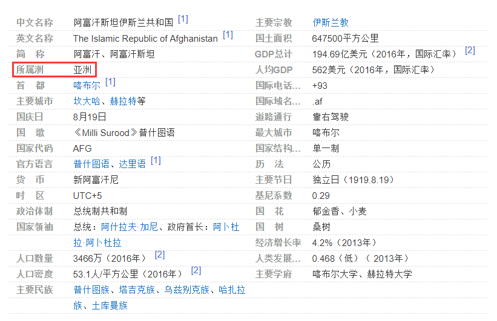
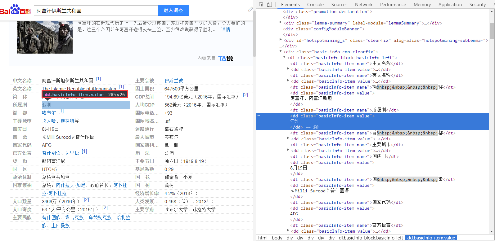

序
最近女票发愁，马上要开组会了，没啥汇报怎么办，于是来求救于看上去无所不能的男票，对，就是我！她的初步要求很简单，就是给她分析数据，其中有一个小问题是这样的，她收集了几千位对象的国籍，国籍呢是遍布全球各个国家，她想有个图描述下这个国籍的变量。
开工
先感受下这个国籍的变量到底有哪些，看看里面的组成，这里选取了如下国家：
#> Parsed with column specification:
#> cols(
#> X1 = col_character()
#> )
country
#> [1] "阿尔及利亚" "阿富汗" "阿根廷" "阿曼苏丹国"
#> [5] "埃及" "埃塞俄比亚" "爱尔兰" "安哥拉"
#> [9] "奥地利" "澳大利亚" "巴基斯坦" "巴西"
#> [13] "白俄罗斯" "比利时" "波兰" "玻利维亚"
#> [17] "博茨瓦纳" "布基纳法索" "德国" "多哥"
#> [21] "俄罗斯" "厄立特里亚" "法国" "非洲"
#> [25] "菲律宾" "冈比亚" "刚果" "刚果金"
#> [29] "哥伦比亚" "荷兰" "几内亚" "加拿大"
#> [33] "加纳共和国" "柬埔寨" "喀麦隆" "卡塔尔"
#> [37] "科摩罗" "科特迪瓦" "肯尼亚" "老挝"
#> [41] "黎巴嫩" "利比里亚" "利比亚" "卢旺达"
#> [45] "马达加斯加" "马拉维共和国" "马来西亚" "马里共和国"
#> [49] "毛里求斯" "美国" "孟加拉国" "缅甸"
#> [53] "摩洛哥" "莫桑比克" "墨西哥" "纳米比亚"
#> [57] "南非" "尼泊尔" "尼日尔共和国" "尼日利亚"
#> [61] "葡萄牙" "日本" "瑞典" "塞拉利昂"
#> [65] "塞内加尔" "沙特阿拉伯" "斯里兰卡" "苏丹"
#> [69] "苏里南" "泰国" "坦桑尼亚" "突尼斯"
#> [73] "土耳其" "瓦努阿图" "委内瑞拉" "乌干达"
#> [77] "乌克兰" "乌兹别克斯坦" "西非共同体" "新加坡"
#> [81] "新西兰" "牙买加" "也门" "伊朗"
#> [85] "意大利" "印度" "印度尼西亚" "英国"
#> [89] "越南" "赞比亚" "智利" "中国"
对于这个我们要怎么描述它呢，我们可以按照不同地区划分，开始想到的是按照所在洲划分把，好像这种方式比较简单hhh毕竟女票给的时间只有一个下午，就挑个简单点的方式吧。
发展
一开始是想着查维基百科的结果，从中提取对应的洲，毕竟维基百科有对应的API可以调用，结果发现呢，维基百科里面居然没有可以直接挑出来所在洲的值，大家可自行查看，比如阿富汗，国家所在的洲信息在正文里面，这样提取似乎有些困难，不过可以试试正则表达式：“.洲”也许可以提炼出来。
然后我就转向百度百科了，百度百科还是可以的，信息如下： 
那接下来就只要正确的读取这个值所在的位置就可以了，这里我们使用Hadley大神的rvest包。
我们先找到网页中对应的位置，如下所示： 
可以看到这些是一个个“键值对”组成，对应的标签为dd，所以可以通过dd.basicInfo-item value进行提取。可我们仔细观察发现洲并没有专属的class，其他的值对应的也是这个类，这样看似无法直接提取对应的洲，但实际上反而方便了其他信息一起提取。我们就可以把截图中的所有的基本信息一起提取，只要我们再把前面的“键”标签找到，可以看到是dt.basicInfo-item name。
高潮
我们先对一个国家进行提取，一个搞定后，再多的也就只是交给机器来实现了。我们定义一个提取的函数吧：
library(rvest)
get_baike <- function(name) {
# 获取对应百度百科网址
url <- paste0('https://baike.baidu.com/item/', name)
# 读取网址内容
page <- read_html(url)
# 获取“键”
key <- page %>%
html_nodes('dt.basicInfo-item.name') %>%
html_text(trim = TRUE)
# 获取“值”
value <- page %>%
html_nodes('dd.basicInfo-item.value') %>%
html_text(trim = TRUE)
# 键值进行组合吧
names(value) <- key
# 返回对应的向量
return(value)
}
我们看看获取“阿富汗”信息：
afuhan <- get_baike('阿富汗')
afuhan[1 : 8]
#> 中文名称
#> "阿富汗斯坦伊斯兰共和国\n[1]"
#> 英文名称
#> "The Islamic Republic of Afghanistan\n[1]"
#> 简 称
#> "阿富汗、阿富汗斯坦"
#> 所属洲
#> "亚洲"
#> 首 都
#> "喀布尔\n[1]"
#> 主要城市
#> "坎大哈、赫拉特等"
#> 国庆日
#> "8月19日"
#> 国 歌
#> "《Milli Surood》普什图语"
基本就大功告成了，我们要获取洲也只要在结果中提取下洲就是了。
afuhan['所属洲']
#> 所属洲
#> "亚洲"
我们再提取上述所有国家的洲：
country_baike <- map(country, get_baike)
names(country_baike) <- country
这里面得到的就是上述所有国家的百度百科情况，接下来提取下他们的洲吧：
country_state <- map(country, ~country_baike[[.]]['所属洲'])
country_state <- country_state %>%
unlist %>%
enframe(name = 'country', value = 'state')
table(country_state$state)
#>
#> 北美洲 大洋洲 非洲 南美洲 欧洲 亚洲
#> 4 3 37 7 14 25
收尾
下面就简单的画个图吧，收个尾：
detach("package:rvest", unload=TRUE)
#> Warning: 无法卸下'rvest'这个名字空间：
#> 名字空间'rvest'是由'tidyverse'引进的，因此无法将之卸下
country_state %>%
group_by(state) %>%
dplyr::summarise(n = n()) %>%
ggplot(aes(state, n, fill = state)) +
geom_bar(stat = 'identity') +
scale_fill_jama()